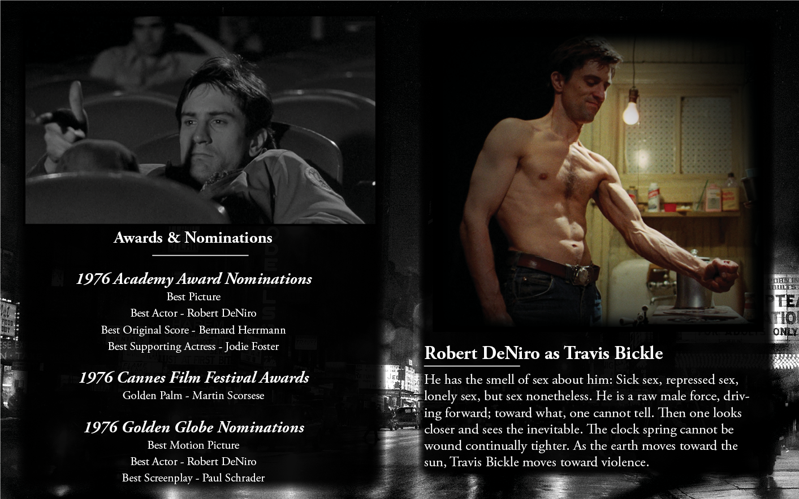
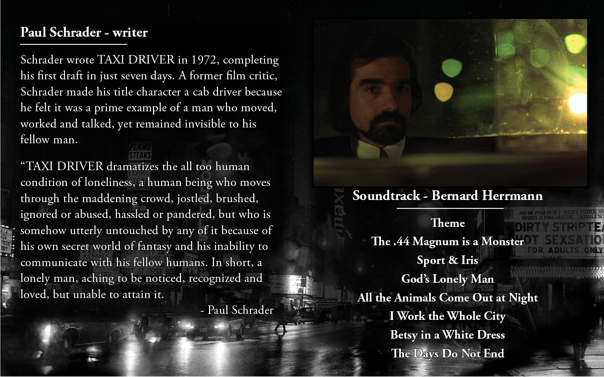
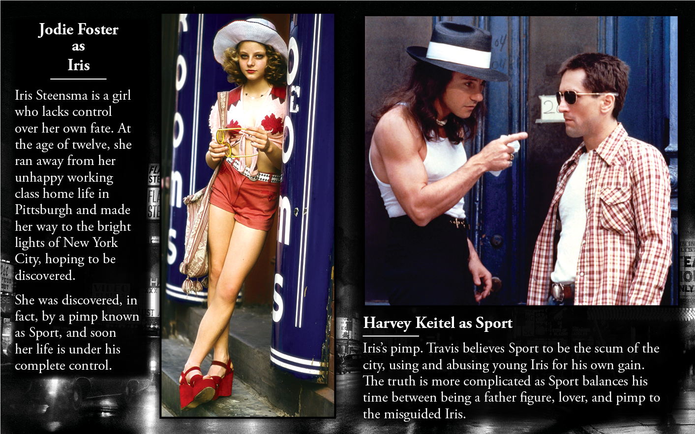
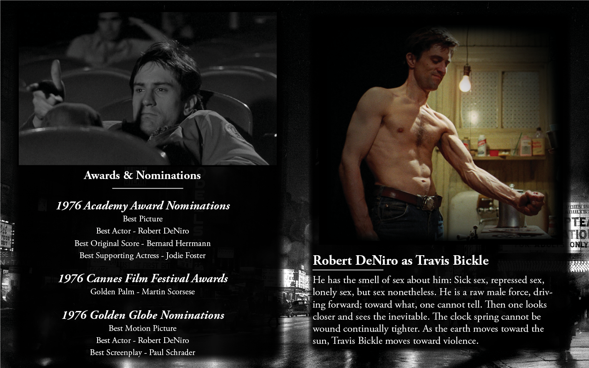
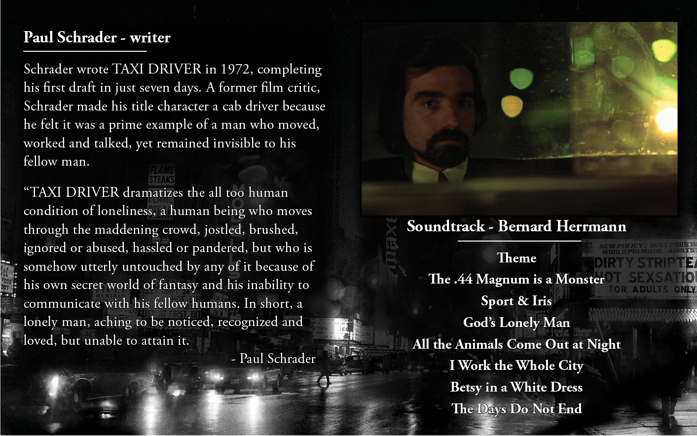
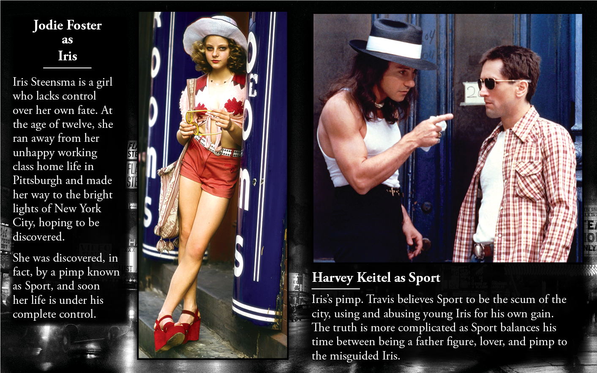

Taxi Driver
To rub shoulders with the Times and Gazettes of the world, hot to the scene emerging newspaper Point of News needed a fresh take on an archaic formula.
Requirements:
capture the dark and gritty nature of the film, showcase the characters over the actors,
 





If it bleeds, it leads; the harsh reality of the state of journalism today. Headlines of sensational chaos and unimaginable violence tickle our curiousity and capture our imagination.
But it's nothing to be ashamed of, it's human nature. So deeply ingrained in our very dna that we are inexplicably and uncontrollably drawn to mayhem. Why not whet that appetite – read Point of News!